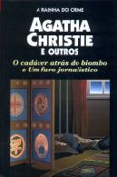

O Cadáver Atrás do Biombo e Um Furo Jornalístico
The Scoop and Behind The Screen
A vida de Wilfred Hope, estudante de medicina, é tudo o que sempre sonhou. Tem pela frente uma carreira promissora e está noivo da encantadora Amy Ellis. Mas a partir do momento em que o sombrio Paul Dudden aluga um quarto na casa dos Ellis, a vida da família desmorona. Todos vivem sempre nervosos e apreensivos, como se temessem o misterioso hóspede. Um dia, quando visita a namorada, Wilfred descobre, atrás de um biombo na sala de estar onde todos se encontravam, o corpo ensangüentado de Dudden.
O cadáver atrás do biombo foi escrito por Agatha Christie e outros cinco mestres da ficção policial: Hugh Walpode, Dorothy L. Sayers, Anthony Berkeley, E. C. Bentley e Ronald Knox. Walpode apresentou a trama no primeiro capítulo. Seus colegas ficaram com a difícil missão de encontrar a solução para um mistério aparentemente insolúvel. Valeria a pena descobrir o assassino, ou Dudden merecia realmente morrer?
Um furo jornalístico, outro mistério presente nesta edição, é mais uma maravilhosa criação coletiva na qual sobressai o talento de Agatha Christie. Ao lado de outros gênios do gênero, fica ainda mais evidente a criatividade da grande Dama do Crime.